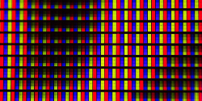
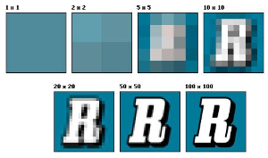

Apa yang dimaksud Pixel dan Resolusi
> by Blog Xoupedia
> Mei 02, 2022
> Edukasi
Apa yang dimaksud pixel dan resolusi ? Dari pertanyaan tersebut mungkin ada beberapa dari kalian yang sudah tau kalau untuk fotografi atau gambar pada desain grafis , gambar tidak jelek atau gambar terlihat jelas.
Pada era modern saat ini tentu bagi kita sangat tidak asing mendengar kata desain grafis. Desain grafis merupakan suatu bentuk komunikasi visual dengan menggunakan gambar dalam menyampaikan sebuah informasi atau sebuah pesan. Hal ini digunakan agar informasi atau pesan disampaikan secara efektif.
Dalam sebuah desain grafis perlu bagi seorang desainer untuk mengetahui beberapa hal sebelum ia menjadi desain grafis profesional. Hal yang perlu diketahui oleh para desain grafis adalah pixel dan resolusi. Apa itu pengertian pixel dan resolusi ?
Pengertian Pixel
Dalam sebuah gambar yang ada pada layar Hp atau laptop itu sebenarnya kumpulan dari ribuan titik-titik atau yang disebut dotted. Dari setiap titik-titik tersebut mempunyai warna tertentu sehingga menjadikan bentuk sebuah gambar yang berwarna. Pixel dalam sebuah gambar selain memiliki fungsi untuk membentuk grafis juga mempengaruhi kualitas warna dari jumlah yang dimiliki.
Pixel adalah sebuah unsur gambar atau representasi titik terkecil dalam gambar yang dihitung per/inch dan akan terlihat dimata sebuah unsur tersebut berbentuk kotak kecil. Pixel sendiri berasal dari akronim bahasa inggris Picture Element yang disingkat menjadi Pixel. Tugas dari piksel sendiri sebenarnya yaitu :

- Membawa informasi dan menentukan warna (hue)
- Menentukan kekuatan warna (saturation)
- Menentukan seberapa terang warna yang ditampilkan (brightness)
Pixel berunsur dari 3 warna yaitu hijau biru dan merah(RGB) dan dari setiap inch warna itu dapat menghasilkan 16 juta warna dari perubahan atau penambahan inch tersebut. Pada pixel juga ada yang disebut pixel destnity. Pixel destnity adalah sesuatu yang mendeskripsikan
ketajaman dan kecerahan dari layar Hp, komputer/laptop atau televisi. Pixel desnity dapat diukur dalam PPi (Pixel Per Inch) dapat menunjukkan berapa banyak pixel yang tertampil,semakin tinggi pixel density semakin tinggi juga kecerahan dan ketajaman gambar yang ditampil.pixel density dihitung dari resolusi dan besarnya layar yang ditampil.
Pixel Density = Akar((Berapa Banyak Pixel Horizontal ^ 2)+(Berapa Banyak Pixel Vertikal ^ 2))/Besarnya Layar(screen size)
Pengertian Resolusi
Resolusi adalah jumlah pixel atau picture element yang tersusun dalam sebuah gambar digital. Resolusi adalah kerapatan pixel pada sebuah gambar dan tersusun dari pixel (kotak kecil). Resolusi dapat diukur sesuai kerapatan pixel dalam 1 inch, jadi semakin besar resolusi gambar maka pixel pada gambar akan terlihat detail.
Resolusi ditentukan dengan jumlah atau kumpulan pixel yang membentuk gambar foto. Resolusi merupakan salah satu faktor penentu kualitas gambar digital. Sebab resolusi berbanding lurus dengan kualitas gambar. Semakin tinggi resolusi, semakin bagus kualitas gambar. Sebaliknya, semakin rendah resolusi, semakin rendah kualitas gambar.

Satuan Resolusi yang sering digunakan dalam desain
Resolusi yang diukur berdasarkan PPi (Pixels Per inch) atau DPi (Dots Per inch). DPi digunakan untuk menunjukkan pixel per inch pada gambar digital, jika kalian melakukan scan pada sebuah gambar, ukuran yang biasa dipakai adalah PPi.
Sedangkan DPi biasanya digunakan sebagai ukuran printer untuk menunjukkan titik yang harus dicetak per inch nya. Desain grafis biasanya menggunakan photoshop untuk mengatur resolusi gambar dalam Pixel per inch atau Pixel per centimeter.Kebutuhan resolusi tergantung penggunaan dari gambar itu sendiri.
Resolusi berdasarkan kebutuhan sebuah desain :
- Untuk offset atau printing bisa menggunakan resolusi 300dpi.
- Untuk keperluan cetak outdoor atau indoor bisa menggunakan resolusi 100 - 150dpi.
- Untuk content atau benner website bisa menggunakan resolusi 72 dpi.
Berikut cara bagaimana mengatur resolusi dan pixel pada gambar agar mendapatkan hasil yang bagus dan tidak buram. Untuk artikel seputar pixel silahkan kunjungi web kami www.Noprogamming.com